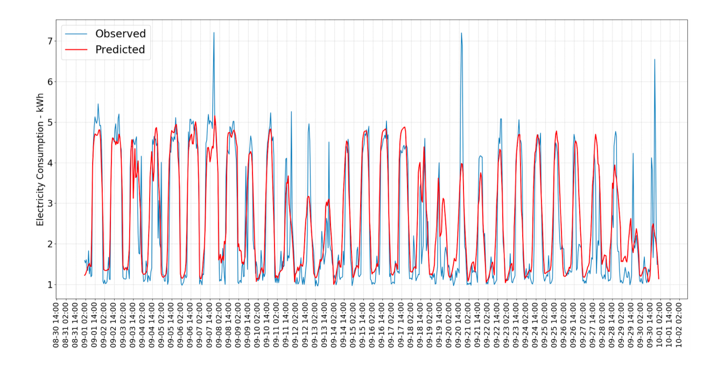
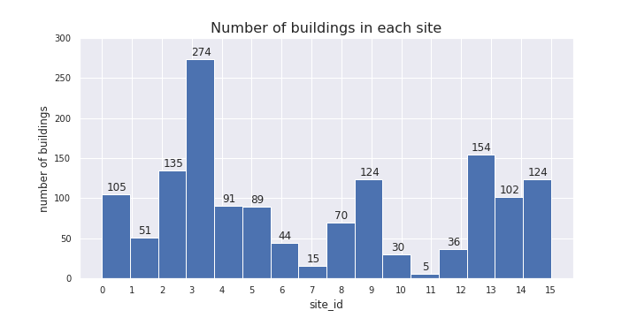
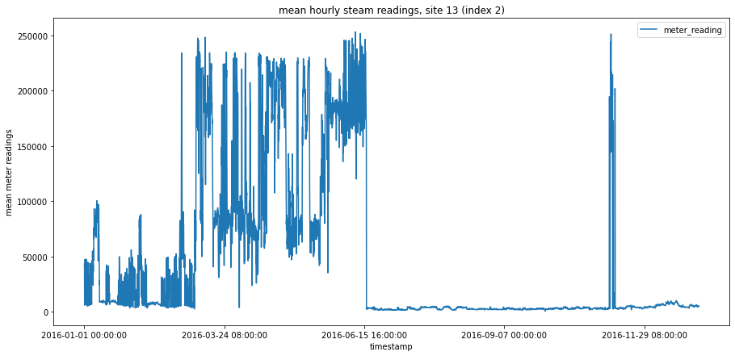

Xinchang ‘Cathy’ Li
· cathyxinchangli
Department of Civil and Environmental Engineering, University of Illinois at Urbana-Champaign
Benjamin Smakic
· mkbenja
Department of Aeronautical & Vehicle Engineering, Royal Institute of Technology, KTH; Department of Civil and Environmental Engineering, University of Illinois at Urbana-Champaign
Zhiyi Yang
· zhiyiy2
Department of Civil and Environmental Engineering, University of Illinois at Urbana-Champaign
Mingyu Sun
· mingyu012
Department of Civil and Environmental Engineering, University of Illinois at Urbana-Champaign
Abstract
Under pay-for-performance financing, the building owner makes payments based on the difference between their real energy consumption and what they would have used without any retrofits. The latter values have to come from a model. Current methods of estimation are fragmented and do not scale well. Some assume a specific meter type or do not work with different building types.
Therefore, we develop accurate models of metered building energy usage in the following areas: chilled water, electric, hot water, and steam meters. The data comes from over 1,000 buildings over a three-year timeframe. With better estimates of these energy-saving investments, large scale investors and financial institutions will be more inclined to invest in this area to enable progress in building efficiencies.
Three different AI-models were used. First, a linear regression model was tested as a baseline. It was discovered that the model performed poorly, with a final root mean squared logarithmic error (RMSLE) of 4.5. Merely linear prediction was not enough to obtain accurate predictions, which suggests that strong non-linear relashinships exist between the features and target variable (energy usage). Then, a three-layer Recurrent Neural Network with Long Short Term Memory was trained and tuned, with a test RMSLE of 1.6. The performance was better than linear regression but not impressive becuase of the simplicity of the model architecture and the trade-off between the number of data samples and the length of training period. Finally, the Light Gradient Boosting Machine was chosen because of its ability to deal with categorical variables and large structured dataset. Building one model for each meter type resulted in the best performance (test RMSLE = 1.2).
Introduction
By utilizing modern electric meters, it possible to collect and store enormous amount of data about building energy consumption. This data can be used to predict
energy consumption and help energy providers manage energy output and plan for energy peaks/lows. It can also help the individual resident keep track
of their energy usage, as well as being analysed for possible energy saving retrofits.
Most buildings that will exist by mid-century have already been built and in use. As the human population increases, it is vital to lower the energy footprint of existing buildings and conserve the limited resources Earth has to offer. This can be achieved by collecting detailed and complete energy use data of the exising buildings using smart meters, and feed the data into building energy models for analysis (Figure 1). In recent years, machine learning (ML) algorithms have been explored to act in place of traditional physics-based building energy models and their performances validated.
This project focuses on predicting building energy consumption based on the Kaggle competition “ASHRAE - Great Energy Predictor III”. The main goal of the project is first and foremost to create a ML model that can predict the energy usage of a building as accurately as possible, based on different input data such as air temperature, building size etc. In addition to that, different ML models are explored to investigate which one works the best for this particular competition.
Figure 1: Building retrofit flowchart.
Literature review
Zhang, Grolinger, & Capretz (2019): Forecasting Residential Energy Consumption: Single Household Perspective
In the paper “Forecasting Residential Energy Consumption: Single Household Perspective” [1], the authors attempt to predict energy consumption in residential households, with focus on single households.
According to the authors it is more difficult to predict single household energy (electricity) consumption, compared with e.g. workplace energy consumption. The reason is that single households often differ in energy consumption patterns while workplace patters tend to be more similar. Also, if big workplace buildings or multi-family residential buildings are analysed, any anomalies tend to cancel each other out (with a big enough dataset).
Data set
The data set used originates from an electricity provider in London, Ontario, Canada. It consists of hourly smart-meter readings of electricity usage (kWh) of 15 households between 2014 and 2016.
Firstly, the data set used might not be sufficiently broad. Tracking only 15 households will most likely not capture a variety of electricity consumption patterns. However, it was deemed enough in this case. Furthermore, the data set comes from one city with a certain climate, which means that different environmental prerequisites are not considered. Perhaps using other cities from a different part of the world would lay a foundation for a more advanced ML-algorithm (Machine Learning algorithm). As it is now, the ML-algorithm might be inaccurate for other parts of the world. In addition to this, Zhang, Grolinger & Capretz state that residents of London, Ontario, Canada tend to heat their homes gas heating systems, which affects the electricity consumption drastically.
Secondly, the data set used is pre-processed in different ways. Any missing readings of electricity consumption is replaced with the average value of the previous reading and the next reading, missing weather condition is replaced with the weather condition of the previous hour etc. This is perfectly good way of replacing missing data. However, the authors do not give an explanation as to why this method was chosen, if there are any consequences and if there are other methods of making the data set complete.
Exploratory Data Analysis
The EDA performed by the authors is illustrated in the form of electricity consumption graphs and heat-maps. The patterns show that most households live regular lives (the authors do not define what “regular lives” mean, though it can be understood by the context). However, there are some exceptions where irregularities occur (e.g. empty homes during the summer when consumption otherwise is the highest), which significantly reduce the precision. This could be improved by adding vacancy detection which could be implemented in the ML-algorithm (which raise privacy concerns). Zhang, Grolinger & Capretz realize that the top three most important variables (i.e. the variables that correlate the most with the output energy consumption) are “temperature”, “hour of the day” and “peak index”. Peak index is a variable that captures important energy usage peaks, such as peak hours, days, seasons etc.
Prediction model and results
The authors used Support Vector Regression (SVR) to predict the energy consumption. SVR is a supervised machine learning algorithm, which means that it is compares an input with an output and is trained by comparing predicted results with true results. It was chosen due to time and computational hardware constraints. No other evaluations or comparison of other machine learning algorithms were made by the authors, so it is difficult to understand why SVM is faster and require less processing power.
Zhang, Grolinger & Capretz present the results for home #1 in Figure 2. They managed to predict electricity consumption well. The most inaccurate parts are peaks that arise due to random variations. Furthermore, the authors present a table with results for all 15 homes, Figure 3. According to them, time-based splitting is used to check parameter stability over time, which makes the algorithm more accurate. In this case however random sampling performs better in cases where some residential customers have irregular and uncertain patterns. These uncertain patterns make time-based splitting more inaccurate over time. Therefore, both methods are employed. Lastly, mean absolute percentage of error (MAPE) was utilized to measure the performance of the algorithm, which is a widely used performance metric.
Figure 2: Observed electricity consumption compared to predicted electricity consumption for house #1 (of 15) (Zhang et al.).
Figure 3: Performance results of the predication model for all homes.
Critiques
The biggest strength of the paper is the execution of the chosen methods to achieve desired results. It is a relatively successful attempt at predicting single households, which tend to be more unpredictable compared to multi-family or corporate residential buildings. The biggest weakness is the justification for the chosen methods. The authors do an excellent job of utilizing the chosen methods, but there is little thought put in to why these methods where chosen or why they did certain things. By including a more extensive evaluation and justification for method choices, the target audience and other researchers in the same field can understand better and continue the research. However, it makes the paper longer and more complex, which can be negative for the readers and the target audience.
Edwards, New, & Parker (2012): Predicting future hourly residential electrical consumption: A machine learning case study
The article [2] explores seven machine learning (ML) techniques on their performances in predicting next hour electricity consumption of buildings, with a focus on residential buildings. Sensor-based energy modeling uses high-frequency sensor data and ML algorithms to statistically derive building energy forecasting models that can help improve building efficiency. Previous studies have applied such models to commercial buildings where high-frequency sensor data are available, but not to residential buildings due to a lack of sensors in homes and consequently a lack of frequent sensor data. The authors address this gap by employing a new high-frequency residential dataset to test proven and emerging ML techniques on predicting next hour residential energy consumptions. The ML techniques used include: Linear Regression, Feed Forward Neural Networks (FFNN), Support Vector Regression (SVR), Least Squares Support Vector Machines (LS-SVM), Hierarchical Mixture of Experts (HME) with Linear Regression Experts, HME with FFNN Experts, and Fuzzy C-Means with FFNN. They use cross validation for parameter tuning, and select the best model based on three performance metrics, namely Coefficient of Variance (CV), Mean Bias Error (MBE) and Mean Absolute Percentage of Error (MAPE).
The authors first validate the ML techniques on the ASHRAE Great Energy Predictor Shootout dataset, which contains hourly sensor data for a commercial building of year 1989. They find that FFNN performs best on this dataset, with CV at ~11%, competitive with the top-3 competition winners. Then they apply these techniques to the new dataset, the Campbell Creek dataset, which contains full-year (2010) measurements at 15-minute interval from sensors installed on three Tennessee homes. The results show unsatisfactory results from FFNN (CV = ~32%), close to the baseline Linear Regression (CV = ~34%). LS-SVM is selected as the overall best technique for modeling the Campbell houses, with an average CV of ~26%. The overall larger model errors in the residential dataset are attributed to variant occupancy behaviors in homes that lead to more complex energy use patterns, as compared to those of commercial buildings, which tend to vary only between workdays and weekends/holidays. The also find that statistically different training and testing data may cause LS-SVM to fail when generalizing to the testing data, which is the case for the ASHRAE dataset. The performance of LS-SVM is improved after randomizing the training and testing data.
This paper provides a comprehensive analysis on the application of multiple ML techniques to building energy data, which could serve as a guide to our project. The discussions on the differences between commercial and residential buildings are particularly helpful for our feature engineering and model selection, as we are expected to model 16 building types, commercial and residential included. The authors are also able to identify and prove the cause of failure for LS-SVM on the ASHRAE dataset, which may help us in model tuning and selection. Despite these merits, the paper does not address the differences in performance for FFNN, HME-FFNN and FCM-FFNN, the three closely related methods, shedding doubts on whether it is necessary to include them all. In addition, it would be very informative if the paper included the computational expenses required for training each model, which could be an important metric in model selection especially for real-life applications.
Ferrarini, Fathi, Disegna, & Rastegarpour (2019): Energy consumption models for residential buildings: A case study.
This article [3] mainly discusses the advantages and disadvantages of four different energy consumption models for residential buildings based on a real building in the north part of Italy. These four energy consumption models are Black-box and scenario definition model, Gray-box model, White-box (Energy Plus) model and Tuned Energy Plus model respectively.
Due to the fact that the energy consumption is affected by multiple kind of factors such as the building material, light, temperature and so on. Different data sources are needed in this analysis. Therefore, the data that this paper use to analyze is mainly from three different kind of sensors which are temperature sensor, heat cost allocator and heat meter respectively. What’s more, the meteorological data is also be considered in these models. The data was collected every 15 minutes and the whole collecting process lasted for seven months.
In the main body of this paper, it introduces the different modeling approaches of these four energy consumption models and use all of them to calculate the yearly and monthly energy consumption. After that, three important indexes are introduced to compare the four models which are error, error% and NRMSE% respectively. The index of error is used to evaluate the monthly consumption, while the indexes of error% and NRMSE% are used to evaluate the yearly consumption This paper subtracts measured energy consumption from the estimated energy consumption to ger error and it divides error by measured energy consumption to get error%. In addition, it calculates the NRMSE% with a complex mathematical formula with the value of error and error%.
According to the figure 1 shown in the article (2019), we can tell that the model of black-box 1 has the smallest error, which means it is the most accurate model among these models both on a monthly and annual basis. The reason for its accuracy is that it uses more direct measurement data in the modeling process, unlike other models that convert part of the measurement data into other parameters before using it.
In addition, although compared to Black-box model, the tuned Energy Plus model does not have that high accuracy rate, but its performance in the annual forecast fully meets industry requirements according to the Ferrarini’s summary (2019).
In conclusion, at the end of the article, the author summarized the four models and affirmed the practicality of black-box and tuned Energy Plus model once again.
Amasyali, & El-Gohary (2018): A review of data-driven building energy consumption prediction studies.
Buildings cause a large portion of energy consumption across the world. To reduce the energy consumption, plenty of research has been conducted on predicting the energy consumption for different types of buildings. Two major approaches for predicting building energy consumption are: physical modeling (forward-modeling/white-box modeling) and data-driven modeling (black-box modeling). Physical models are based on detailed energy analysis which requires input information such as building geometry and construction materials. Since physical models rely heavily on the accurate input but the detailed input is often not available to the public, data-driven models based on the available energy consumption data has come to attention. The four typical steps in developing a data-driven model are: data collection, data preprocessing, model training and model testing.
This paper [4] provides a review of the existing data-driven building energy consumption models from a multivariate perspective. In this paper, the existing models are categorized based on the following criteria: 1. Scope of prediction. The scope of prediction is classified by types of building, temporal granularity, and type of energy consumption predicted. 2. Types of data. Data are classified into real data, simulated data and publicly available benchmark data such as ASHRAE’s Great Building Energy Predictor Shootout dataset. 3. Types of features used in the machine learning algorithms, such as building characteristics, occupant energy use behavior, and outdoor weather conditions. 4. Data sizes, which is related to the collection period of the energy consumption data. 5. Data preprocessing techniques such as data cleaning, data integration, data transformation and data reduction. 6. Machine learning algorithms. The widely used model training algorithms in this field includes: SVM, ANN, decision trees, and other statistical algorithms such as multiple linear regression, general linear regression, autoregressive integrated moving average, Bayesian regression, polynomial regression, etc. Each algorithm has its benefits and drawbacks and should be chosen based on the available data and the goal of the project. For example, statistical algorithms are usually easy to be understood and explained, while the model accuracy might be not as good as SVM and ANN models. 6. Model performance evaluation. The widely used criteria for testing the model performance are the coefficient of variance, mean absolute percentage error, and root mean square error.
The limitations of the existing models are also summarized in this paper. First, data-driven models may perform poorly with new datasets. Thus, the usage of a data-driven model might be limited to certain data ranges. Second, since the data-driven models are black-box models, it is hard to interpret the physical meanings of the models to gain better understanding of buildings’ energy consumption. Thus, hybrid models which combine physical modeling and data-driven modeling can balance the benefits and drawbacks of both modeling approaches.
After reading this paper, we can narrow down the possible models for the project based on the available data provided in Kaggle. Since the meter data is time series data, statistical models such as the autoregressive model or autoregressive integrated moving average might be preferred.
Methods
Exploratory Data Analysis
Five data files are provided in the competition dataset. The file names and the contents of each file are detailed below (adapted from the competition site).
train.csv
- building_id - Foreign key for the building metadata.
- meter - The meter id code. Read as {0: electricity, 1: chilledwater, 2: steam, 3: hotwater}. Not every building has all meter types.
- timestamp - When the measurement was taken
- meter_reading - The target variable. Energy consumption in kWh (or equivalent, except site 0 electric meter readings which are in kBTU). Note that this is real data with measurement error, which may impose a baseline level of modeling error.
building_meta.csv
- site_id - Foreign key for the weather files.
- building_id - Foreign key for training.csv
- primary_use - Indicator of the primary category of activities for the building based on EnergyStar property type definitions
- square_feet - Gross floor area of the building
- year_built - Year building was opened
- floor_count - Number of floors of the building
weather_[train/test].csv
Weather data from a meteorological station as close as possible to the site.
- site_id
- air_temperature - Degrees Celsius
- cloud_coverage - Portion of the sky covered in clouds, in oktas
- dew_temperature - Degrees Celsius
- precip_depth_1_hr - Millimeters
- sea_level_pressure - Millibar/hectopascals
- wind_direction - Compass direction (0-360)
- wind_speed - Meters per second
test.csv
The submission files use row numbers for ID codes in order to save space on the file uploads. test.csv has no feature data; it exists to help get predictions into the correct order.
- row_id - Row id for your submission file
- building_id - Building id code
- meter - The meter id code
- timestamp - Timestamps for the test data period
sample_submission.csv
A valid sample submission containing row_id to match your predictions.
All floats in the solution file were truncated to four decimal places. There are gaps in some of the meter readings for both the train and test sets. Gaps in the test set are not revealed or scored.
Missing values
Here are the number (percentage) of missing values in each dataframes:
1. Missing data in bldg_meta:
- primary_use: 0 (0.0%)
- year_built: 774 (53.4%)
- square_feet: 0 (0.0%)
- floor_count: 1094 (75.5%)
2. Missing data in weather_train:
- air_temperature: 55 (0.0%)
- cloud_coverage: 69173 (49.5%)
- dew_temperature: 113 (0.1%)
- precip_depth_1_hr: 50289 (36.0%)
- sea_level_pressure: 10618 (7.6%)
- wind_direction: 6268 (4.5%)
- wind_speed: 304 (0.2%)
3. Missing data in weather_test:
- air_temperature: 104 (0.0%)
- cloud_coverage: 140448 (50.7%)
- dew_temperature: 327 (0.1%)
- precip_depth_1_hr: 95588 (34.5%)
- sea_level_pressure: 21265 (7.7%)
- wind_direction: 12370 (4.5%)
- wind_speed: 460 (0.2%)
As we can see, some features such as year_built, floor_count and air_temperature, are missing over half of all entries. Special attention should be given to these variables when filling in the missing values to avoid losing raw training data while minimizing artificial influence.
Building Metadata
There are in total 16 sites, labeled 0~15 (site_id), containing 1449 buildings. Each building is identified with a unique building_id independent from the site_id, from 0 to 1448. The number of buildings in each site differ greatly, as shown in 4.
Figure 4: Number of buildings in each site.
There are 16 primary use types, with a mix of residential and commercial buildings, mostly built after the 1950s. Both the building square footage and floor counts are approximately logarithmically distributed, meaning most buildings are relatively small, single- to multi-story buildings (5). There’s a fairly strong correlation (correlation coefficient = 0.53) between building square footage and floor counts, as we could expect, and a small but positive correlation between the constructed year and the building size (0.11).
Figure 5: Distribution of features in building_metadata.
Target Variable: Meter Readings
Please feel free to remove this or change, I just added it to make it easier to know what should be included here
When analyzing the meter readings, it was discovered that some measurements were suspiciously high. After analyzing each meter type, It was found that meter 2 (steam) was responsible for the unusually high values. After this discovery, each site was analyzed, and the data anomaly was located to site 13. Figure ?? shows the mean hourly steam readings for site 13. Figure ?? shows all meter readings for all sites. Lastly Figure ?? illustrates all meter readings when site 13 was removed. It is clear that the readings are much larger in the first two graphs. Also, the shape of the graph is dictated by site 13.

Weather Data
weather_train has 2016 hourly weather data, and weather_test has 2017~18 hourly weather data. The time series plots for all variables of both the training and test periods are shown below (6).
Figure 6: Time series plots of weather variables.
Correlations
Putting building_metadata, train and weather_train together, we can generate the correlation between each features and the target variable. The heat map below (7) shows that the correlation between variables range from -0.32 to 0.98, but no individual features have significant correlation with the target variable meter_reading. The top 5 most features most correlated with meter_reading are building square footage (0.13), number of floors (0.13), year of construction (0.11), meter type (0.077), and sites (0.047). This suggests that building metadata are potentially important predictors for our machine learning models, and the missing values need to be treated with care.
In addition, some features show rather strong correlations with each other, such as: square_feet and floor_count (0.58); air_temperature and dew_temperature (0.75); wind_direction and wind_speed (0.43). This may provide insights to imputation of the missing values.
Figure 7: Correlations heatmap.
Machine Learning Models
Baseline: Linear Regression
This section will cover how a linear regression model was constructed in order to predict household energy consumption, as well as discuss the limitations of a linear model.
Training data preprocessing
As it has been described earlier in this section sections, the data used for this Kaggle competition came in three different files: train data, building metadata and weather train data. Since the dataset contains over 20 million readings and numerous features, issues with RAM usage had to be dealt with. The main problem was that not all desirable features could be included in the before RAM usage hit the limit. It was crucial to identify the most predictive features and not include meaningless features which would increase unneccesary RAM usage. In addition to that, a memory saving function was utilized, which changed the data types to be less memory demanding. Lastly, the three datasets were loaded with only the desired columns, to further reduce unneccesary RAM usage.
Linear regression model
The linear regression model was created by adding a feature layer with all the desired numerical and categorical features and then adding a dense layer for linear regression. First, missing values in a column were replaced with the mean of that column. In order to create a feature layer, the features used for the prediction had to be converted to tensors. Lastly, categorical features had to be one-hot encoded before being added to the feature layer.
The best public score (RMSLE) that could be obtained with this linear model was 4.5 (4.24 private score).
Neural Network: Recurrent Neural Network with Long Short Term Memory (RNN-LSTM)
Choossing the Model
This dataset is in its essense a time-series dataset, which is what RNN is designed at handling. LSTM is one of the most effective and commonly used RNN that improves on RNN’s diminishing gradient problem. The advantage of using RNN-LSTM is that instead of using engineer features to account for the time information, the model architecture inherently carries this info and learns the relationship between each timestep, reducing the number of features needed.
Training Data Preprocessing Building Metadata
We first treated the building meta data as it is used in both training and testing. year_built and floor_count were the two features containing missing data. Since one site likely has buildings built around the same time, we used the average year_built in one site to impute the missing values. Similarly, same primary_use may mean buildings have similar number of floors, so we used the average floor_count of one primary_use to impute the missing floor counts.
Weather Data
For weather_train, we noticed that there were missing entries in the weather_train dataframe, i.e. for some hours in the training data there were not a single weather variable record. Since NaN values cannot be handled by RNN, we first found the missing hours and filled them in as rows in weather_train.
We then imputed the missing data in weather_train. Since most of the weather variables have clear seasonalities/follows a annual cycle, for each weather variable, we imputed the missing data with the average of the rest of the data in the respective month.
Categorical Column: primary_use
One-hot encoding was first tried for the 16 primary use types, but it created very sparse data (i.e. every one-hot category column only has a small fraction of ones) and quickly consumed all memory. We then chose to use the label encoder from sklearn to convert the categories into integers.
The three dataframes were then merged together to form the training dataframe, with data types modified to conserve RAM.
Creating Training Data Tensors
For RNN, training tensors need to have the following shape:
[number of samples, number of timesteps, number of features]
Each sample needs to have the same shape. However, not every building has record for the whole of 2016. To handle this, we used the same truncating technique as in Class 12, with three major modifications:
1. Each sample is a building-meter pair: this is to solve the problem that not every building has all meter types, and to conform the number of timesteps;
2. Setting a cleaning threshold (THRES): buildings with number of meter_readings < THRES will be discarded;
3. The start of record time period is truncated: instead of truncating the time steps exceeding THRES from the end, I decided to truncate the start, because as observed in EDA, many sites have near-zero meter readings at the start of the training period, which likely is not generalizable and hence should be discarded.
Transforming Target Variable Space
Because we have many heteorogenous feature varaibles having values of different orders of magnitude, we would like to use a normalization layer in our model architecture to transform the data into having zero means and unit standard deviations. If we could also transform the target variable, projecting the values onto a closer space to the training data, that would help the model converge faster.
We chose the numpy.log1p() transformation, which is taking natural log on the all target values plus one. This way, zero meter readings can also be handled without generating negative infinity, and the transformed data have the same order of magnitude as all feature variables. Moreover, unlike normalization/standardization, this transformation is self-contained, meaning we can transform the testing predictions back without relying on the information from the training data.
RNN Architecture
The RNN-LSTM is a simple model with one hidden layer.
1. Normalization layer: to transform the feature variables;
2. LSTM layer with return_sequence = True: This will allow LSTM to generate one output at each time step;
3. Dense output layer.
The code block for constructing the model is shown below.
model = tf.keras.Sequential()norm = tf.keras.layers.experimental.preprocessing.Normalization()norm.adapt(train_x)# Add normalization layermodel.add(norm)# Add RNN: LSTM layermodel.add( tf.keras.layers.LSTM(units=32, # units is the number of hidden states input_shape = (None, num_features), # None to allow for flexible prediction length dropout =0.2, # for regularization return_sequences =True) # So we get a prediction for each time step ) # Add output layermodel.add(tf.keras.layers.Dense(1)) # because we only want to predict one value at each time step
RNN Training
Adam optimizer with a learning_rate of 5e-4 is used for an initial training of 30 epochs. Mean Squared Error losses are monitored with early stopping. It took about 30-45 minutes to finish training.
RNN Tuning Two-step learning rate schedule
After 30 epochs, we lowered the learning rate to 1e-4 and continued training 30 more epochs. This two-step manual learning rate scheduling seemed to generate better performance than using a constant learning rate, as after the intial training the decreasing trend for losses slowed down and plateaued near the end of the initial training, which likely suggested that model learning was at capacity.
Hyperparamter Tuning and Other Adjustments
We attempted to improve the model performance by adjusting the following elements of the model:
* Model architecture: whether to have dropout or not at the LSTM layer;
* THRES value: a higher threshold means less samples but more training time steps, and vice versa.
* Hyperparameters: such as learning rate, number of epochs and number of samples to shuffle.
The following table summarizes the changes we made for three of the submissions, as well as the scores. Note the score for the competition is Root Mean Squared Logarithmic Error (RMSLE) as defined by the competition.
Submission
Model Architecture
THRES
Learning Rate
Shuffle, Batch
EarlyStopping
Scores (Training, Testing)
1
LSTM w/o dropout
7,000
1e-3 for 14/15 epochs, then 1e-4 for 10/20 epochs
20, 10
patience=3
1.696. 1.708
2
LSTM w/o dropout
8,000
5e-4 for 25/25 epochs, then 1e-4 for 25/25 epochs
50, 10
patience=3
1.696, 1.681
3
LSTM w. dropout=0.2
8,000
5e-4 for 30/30 epochs, then 1e-4 for 30/30 epochs
100, 10
patience=3
1.651, 1.623
Changes from 1 to 2 were mainly to test the effect of THRES, and 2 to 3 to test the effect of dropout. Learning rate schedules etc. were also adjusted based on observations from other unsubmitted tries.
Applying RNN to Test Data
Since we constructed traing dataset by seperating samples based on building_id and meter type, we also needed to do predictions accordingly, looping through each building and each of its meters (see code block below). We could not compile testing data into a single array because 1) it caused too much memory overhead; and 2) each building would have different length of time for predictions.
The prediction results were first converted back into the original data space (by taking exponential and subtracting 1), then stored to the corresponding rows in the newly added meter_reading column in the original test dataframe. Using the original test dataframe is necessary to match predictions to the submission file with row_id, as required by the competition. It took ~35 minutes to finish the test.
test['meter_reading'] = np.zeros(test.shape[0], dtype=np.float32)for bldg_id in test_full.building_id.unique(): bldg = test_full[test_full.building_id==bldg_id]print(str(bldg_id)+', ', end='')for m in bldg.meter.unique(): met = bldg[bldg.meter==m]# adding a dim=1 at axis=0 to match the input layer shape ts = np.expand_dims(met[feat_cols].values, axis=0) del met v = np.float32(np.expm1(model.predict(ts).squeeze()))del ts test.loc[(test.building_id==bldg_id)&(test.meter==m), 'meter_reading'] = vdel vdel bldg
Tree-based Model: LightGBM
Introduction of Light Gradient Boosting Machine
I’m a person.
from tqdm import tqdmstep_size =100000res = []i =0for j in tqdm(range(int(np.ceil(test.shape[0]/step_size)))): r = np.zeros(test.iloc[i:i+step_size].shape[0])for model in models: r += np.expm1(model.predict(test.iloc[i:i+step_size], num_iteration=model.best_iteration)) /len(models) res = np.append(res,r) i += step_size
Discussion
Performance of the linear regression model
Is an obtained RMSLE of 4,5 the limit for linear regression? Most likely not. In the model and data preparation, several things can be made better. First, the datasets could be optimized even better. Site 13 was removed because the values were suspiciously high, as seen in the EDA. In this case, an even more in-depth “cleaning” could be made to locate the exact building (or several building) that is responsible for the data anomaly. This deeper cleaning was made for the other models, but not for the linear regression model. Furthermore, if categorical values could be implemented not only in the training, but also the prediction, perhaps a better score could be obtained. However, it must be realized that no matter how many parameters are added to a linear model, it will still only predict new values linearly. If many or strong non-linear relationships exist between the target variable and prediction features, a linear model will never be able to perform nearly as good as e.g. neural networks. This suggests that other AI-models such as Neural Networks must be used.
Performance of the RNN-LSTM model
The simple LSTM model was fairly effective, largely outperforming the baseline linear regression model but slightly underperforming than the lightgbm models.
Tuning attempted improved the performance marginally but steadily. Other tuning opportunities we hope to explore if we had more time include:
excluding some correlated features;
increasing model complexity by adding one or more layers;
other ways of handling missing data.
It is hard to say for certain whether with more tuning, this three-layer RNN-LSTM would outperform our LightGBM models, but our best guess is no.
The trade-off between number of samples and number of timestamps means we are forced to leave behind part of the information from the raw data
in training. This can potentially be viewed as a shortcoming for RNN-LSTM (or rather our way of handling it). In hindsight, building_id proved to be an important predictor, but treating each building-meter pair as a sample forbade us to use building_id as a feature. This also potentially limited the performance of our RNN-LSTM model.
Tree-based Model and Neural Networks
ASSIGNED TO: Minyu & Zhiyi
Challenges
The most significant challenge has been combating the limited memory resources.
A significant amount of time was spent on optimizing the memory usage;
which is also helpful as that potentially has also improved the speed of training/predicting,
and in the long run building foundations for dealing with larger data and more complex problems and models in the future.
Another challenge was data preprocessing. For the LightGBM model, simple time features such as month of year, hour of day can be obtained pretty easily, but to further improve the model performance, lag features are recommended. However, we were not able to implement it in our model. As for RNN-LSTM, massaging the training data into a the same shape was challenging, and our decisions of truncating the data and treating each building-meter pair as a sample have probably limited its predicting power.
References
1. Forecasting Residential Energy Consumption: Single Household Perspective
Xiaoou Monica Zhang, Katarina Grolinger, Miriam A. M. Capretz, Luke Seewald Institute of Electrical and Electronics Engineers (IEEE) (2018-12) https://doi.org/ghnj7q
DOI: 10.1109/icmla.2018.00024
2. Predicting future hourly residential electrical consumption: A machine learning case study
Richard E. Edwards, Joshua New, Lynne E. Parker Energy and Buildings (2012-06) https://doi.org/gf8p8z
DOI: 10.1016/j.enbuild.2012.03.010
3. Energy consumption models for residential buildings: a case study
Luca Ferrarini, Ehsan Fathi, Samuele Disegna, Soroush Rastegarpour Institute of Electrical and Electronics Engineers (IEEE) (2019-09) https://doi.org/ghnj8x
DOI: 10.1109/etfa.2019.8869151
4. A review of data-driven building energy consumption prediction studies
Kadir Amasyali, Nora M. El-Gohary Renewable and Sustainable Energy Reviews (2018-01) https://doi.org/gcq8b9
DOI: 10.1016/j.rser.2017.04.095
 cathyxinchangli
cathyxinchangli